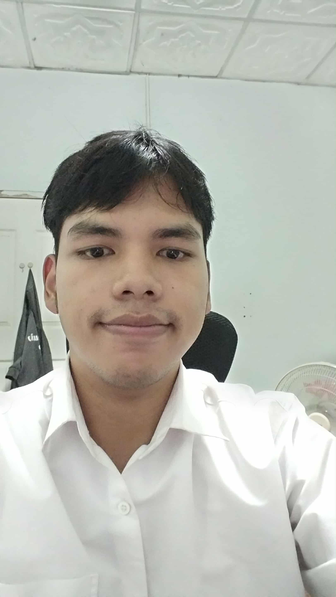
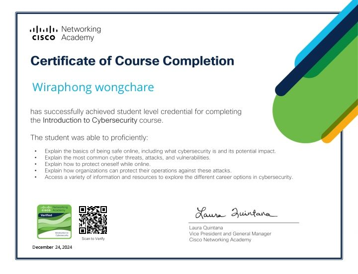
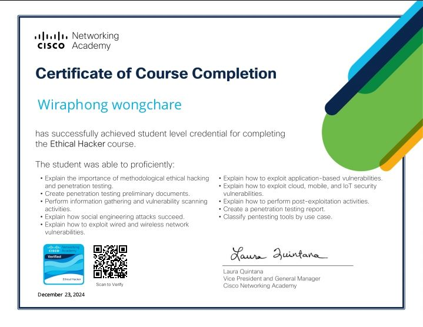
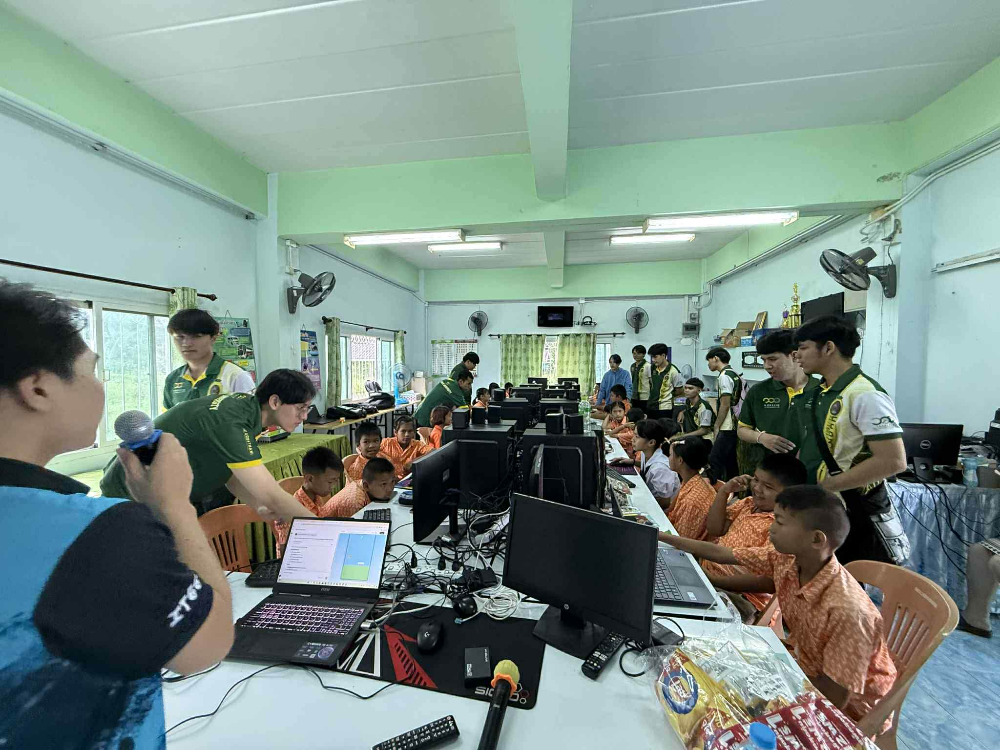

**นายวีรพงศ์ วงศ์ชารี**
สถานะ: **นักศึกษาชั้นปีที่ 3**
สนใจพิเศษด้าน: **AI, Web Dev, Cybersecurity, Data Science**
เกี่ยวกับฉัน
สวัสดีครับผมชื่อนายวีรพงศ์ วงศ์ชารี ชื่อเล่นว่าฟีล์ม ปัจจุบันกำลังศึกษาอยู่ที่มหาวิทยาลัยราชภัฏอุดรธานี
ผมมีความสนใจในด้านเทคโนโลยีสารสนเทศเป็นอย่างมาก พร้อมที่จะทำงานเกี่ยวกับสายงานIT
และมีความมุ่งมั่นที่จะพัฒนาทักษะและความรู้ใหม่ๆอยู่เสมอ
ทักษะด้าน Soft Skills
- การสื่อสารและการนำเสนอ (Communication & Presentation)
- การทำงานเป็นทีมและปรับตัวได้ดี (Teamwork & Adaptability)
- การแก้ปัญหาเฉพาะหน้า (Problem Solving)
- ความกระตือรือร้นในการเรียนรู้ (Eagerness to Learn)
ทักษะทางเทคนิค (Tech Skills)
Programming / Web Development
- Python(พื้นฐาน)
- Java(พื้นฐาน)
- HTML / CSS(พื้นฐาน)
- C Language(พื้นฐาน)
- PHP(พื้นฐาน)
- SQL(พื้นฐาน)
Tools & Platforms
- GitHub / Git
- VS Code
- Figma (Basic UI/UX)
- Microsoft Office
ระดับความถนัด
Web Development (HTML/CSS/PHP)
ผลงานที่ผ่านมา (Projects / Portfolio)
**คำแนะนำ:** ควรมีลิงก์ไปยัง GitHub Repository, Demo หรือวิดีโอสั้น ๆ พร้อมภาพ Screenshot สวย ๆ
ระบบจองที่จอดรถแบบออนไลน์ (Web Project)
เป็นระบบบริหารจัดการและจองที่จอดรถออนไลน์ พัฒนาด้วยภาษา **PHP** และฐานข้อมูล **MySQL** ช่วยลดความยุ่งยากในการค้นหาที่จอดรถ
**เทคโนโลยีที่ใช้:** PHP, HTML, CSS, JavaScript, MySQL
**ลิงก์ไปดูงาน:** github.com/projactpark
การศึกษา (Education)
มหาวิทยาลัยราชภัฏอุดรธานี (UDRU)
**ปี 2566 – ปัจจุบัน**
วุฒิการศึกษา: **ปริญญาตรี (กำลังศึกษาชั้นปีที่ 3)**
สาขา: **สาขาเทคโนโลยีสารสนเทศ (Information Technology)**
*จบการศึกษาระดับประถมถึงระดับมัธยมปลายที่โรงเรียนบ้านหมากแข้ง
*ปัจจุบันกำลังศึกษาอยู่ที่มหาวิทยาลัยราชภัฏอุดรธานี
กิจกรรมและความสำเร็จ
แสดงความสามารถนอกด้านวิชาการและ Certifications
- **เข้าร่วมอบรม:** "Introduction to Cybersecurity"
ได้รับความรู้พื้นฐานด้านการป้องกันภัยคุกคามทางไซเบอร์และการทำ Penetration Testing เบื้องต้น

- **เข้าร่วมอบรม:** "Ethical Hacker"
เสริมสร้างทักษะในการตรวจจับและแก้ไขช่องโหว่ของระบบ

- **ความสำเร็จ:** **แข่งขันรายการ Valorant ของมหาวิทยาลัย ได้แชมป์ของมหาวิทยาลัย**
- **อบรมการใช้ai:** **อบรมการใช้aiให้น้องๆที่โรงเรียน**

เป้าหมาย
เป้าหมายอยากทำงานสายงานเกี่ยวกับ **IT/Tech**